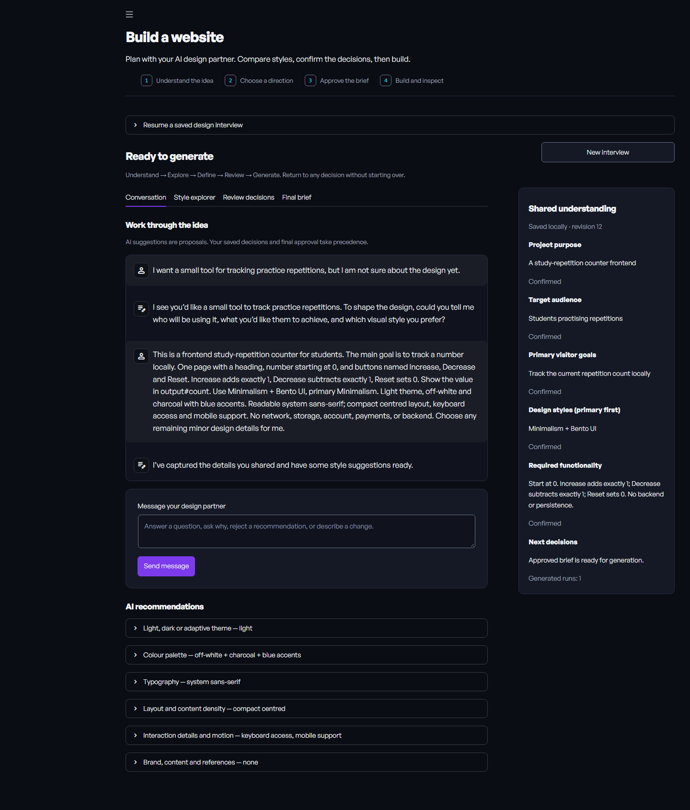
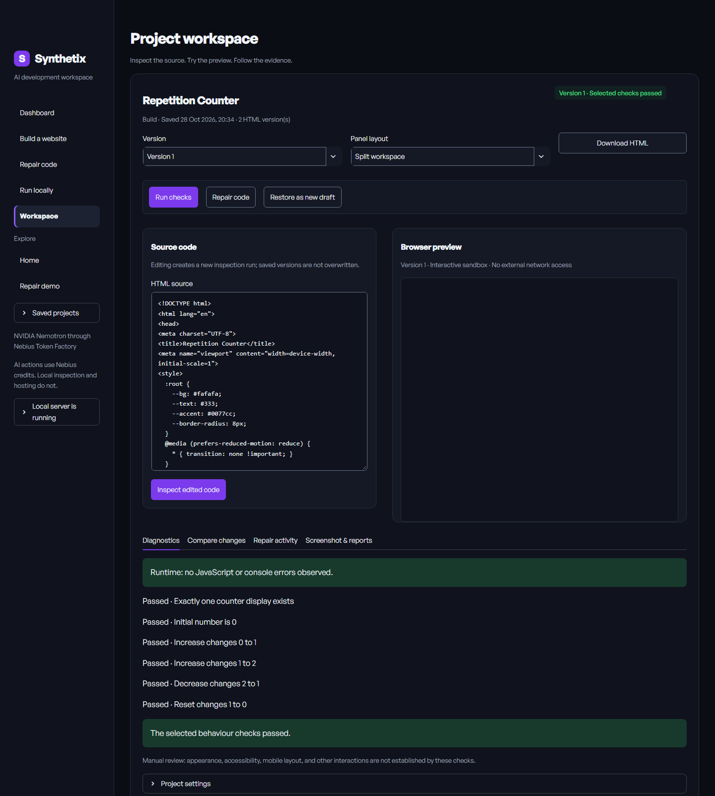

Make the brief together.
Start with a rough idea or a detailed specification. The design partner asks relevant questions, explains recommendations and keeps proposed choices separate from your confirmed decisions.
Plan it with an AI design partner. Build it with Nemotron. Run it in a real browser, inspect the failures, and review the repair.
NVIDIA Nemotron on Nebius Token Factory.
Python, Streamlit and Playwright Chromium.
This counter has a deliberate logic bug: one click adds two. A browser console can be perfectly quiet while the behaviour fails.
count += 2;Expected increment: 1Run the check to compare one click with the expected result.
Scripted illustration, not a live AI repair. No API calls or credits. In the full app, Chromium runs your approved checks and Nemotron attempts the correction.
Start with a rough idea or a detailed specification. The design partner asks relevant questions, explains recommendations and keeps proposed choices separate from your confirmed decisions.
Explore 15 styles, from Minimalism and Editorial Design to Bento UI and Cyberpunk. Compare reasons, alternatives and trade-offs. Combine compatible styles or choose your own direction.
Before final approval, the AI refines the layout, typography, subject-specific details and purposeful animations. Review the proposal inside your editable brief, ask for another direction, or keep your original brief. Motion includes reduced-motion requirements.
Edit the shared understanding, confirm the summary and approve the final text. Generation uses that saved version. Changing a requirement requires a fresh approval.

Generate or import a page. Run it in Chromium. Collect JavaScript exceptions, console errors and failed behaviour assertions. Attempt a targeted repair, then rerun the same checks.
Each step leaves evidence: source versions, screenshots, reports and code differences. Restore an earlier version as an untested draft, review the changes and download your HTML.

Repairs stop after three attempts. Passing selected checks does not prove that every feature, layout or interaction is correct.
Open the online workspace to build, repair and run HTML without installing Python. Connect your own Nebius API key for AI features. Browser checks need no key. Online workspaces are temporary, so download your HTML before leaving.
Prefer local development? Use Python 3.12 on Windows and your own Nebius API key. The repository includes the application, setup instructions and regression tests.
git clone https://github.com/Praharsh1409/synthetix.git
cd synthetixThe online workspace runs on Streamlit Community Cloud and is embedded here through GitHub Pages. Free hosting may sleep when unused. AI calls use your Nebius credits. The local app remains available.
Self-contained HTML/CSS/JavaScript frontends. Multiple views can live in one HTML file. Real payments, authentication, databases and email backends are outside the current scope.
AI conversations, generation, test planning and repair. Local inspection, hosting and this page’s scripted illustration do not call a model.
Only that the selected checks passed within their configured observation window. Test proposals and extracted requirements can be wrong, so human review remains part of the workflow.
Each visitor receives a separate temporary workspace. API keys stay in the current server session and are not written to project files. Work is not permanent: download your HTML before closing or refreshing. The free host may restart or sleep. Browser restrictions and resource limits are not a complete operating-system sandbox; do not upload sensitive code.
No. Synthetix is an independent project built with NVIDIA Nemotron through Nebius Token Factory. The names identify the technologies used, not an endorsement.